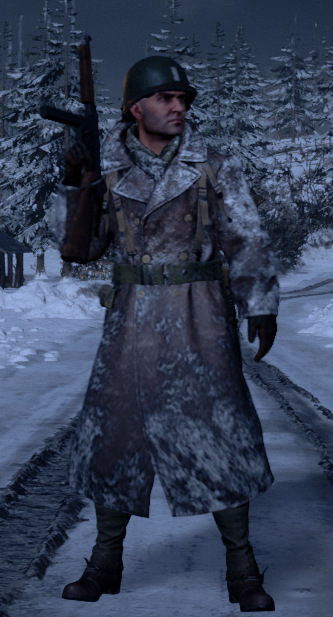
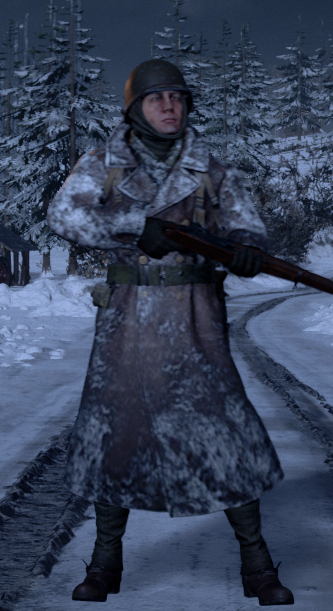
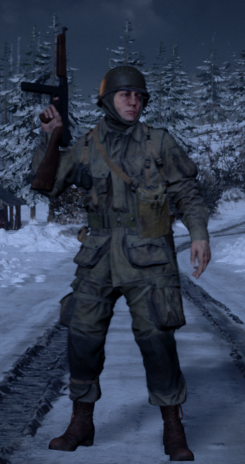
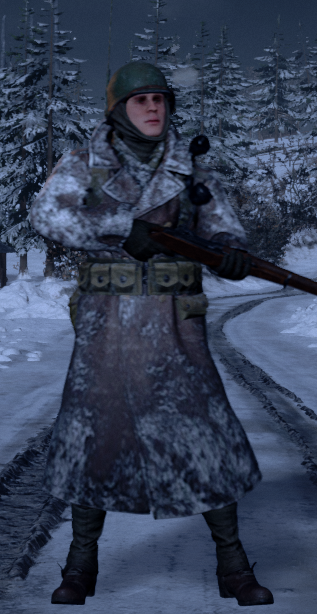
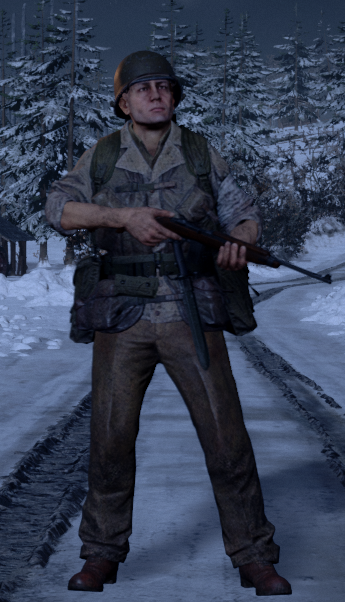
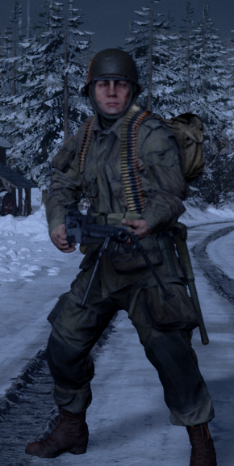
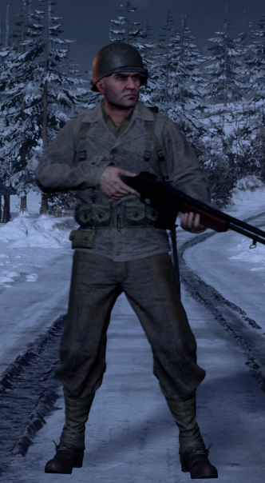
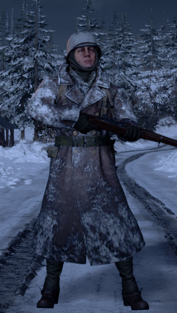
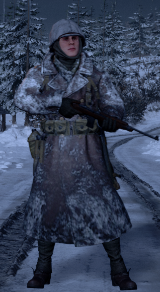

Oficial
L'oficial d'una esquadra d'infanteria lidera i coordina l'equip, dona ordres tàctiques, comunica
amb
el comandant i altres oficials, col·loca punts de reaparció (outposts i garrisons), i assegura
que
l'esquadra compleixi els objectius de la partida.
Equipament
Fusell de repetició, semiautomàtic o subfusell.
Rellotge de campanya (per col·locar punts de reaparció).
Granades de fragmentació.
Kit de primers auxilis.

Fusiler
Rol bàsic i versàtil, ideal per mantenir la línia i participar en combat a mitjana i llarga
distància.
Equipament
- Fusell de repetició o semiautomàtic (exemple: Kar98k, M1 Garand).
- Granades de fragmentació.
- Kit de primers auxilis.

Assalt
Especialista en combat pròxim, excel·lent per netejar edificis, trinxeres i altres espais
reduïts.
Equipament
- Subfusell o escopeta (exemple: MP40, Thompson).
- Granades de fum i de fragmentació.
- Kit de primers auxilis.

Suport
Proporciona subministraments i ajuda en la construcció de punts de reaparció i defenses.
Equipament
- Fusell de repetició o semiautomàtic.
- Caixa de municions o subministrament.
- Granades de fragmentació.

Metge
Cura i reviscola soldats ferits al camp de batalla.
Equipament
- Pistola (exemple: Colt M1911) o fusell de repetició o semiautomàtic.
- Kit mèdic per curar i reviure.
- Granades de fum per cobrir zones obertes.

Metraller
Proporciona foc de supressió per protegir l'esquadra i immobilitzar l'enemic.
Equipament
- Ametralladora lleugera (exemple: MG42, BAR).
- Granades de fragmentació.
- Kit de primers auxilis.

Fusiler Automàtic
Proporciona suport mòbil amb gran capacitat de foc, complementant el rol del metraller.
Equipament
- Fusell automàtic o semiautomàtic (exemple: FG42, M1918 BAR).
- Granades de fragmentació.
- Kit de primers auxilis.

Antitanc
Especialitzat en la destrucció de vehicles blindats i fortificacions enemigues.
Equipament
- Fusell de repetició o semiautomàtic.
- Llançacoets o fusell antitanc (exemple: Panzerschreck, Bazooka).
- Mines antitanc.
- Arma secundària (pistola).

Enginyer
Construeix estructures, fortificacions i defenses per donar suport a l'equip.
Equipament
- Fusell de repetició o semiautomàtic.
- Martell per construir.
- Explosius (exemple: càrregues satchel).
- Mines antitanc o caixes de subministrament.
